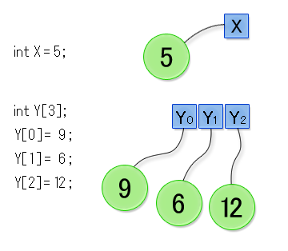
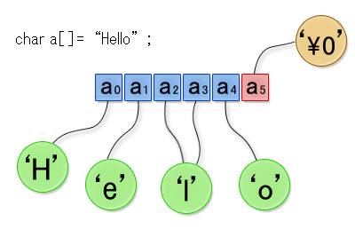

本章ではプログラムの中でもう少し高度なデータを扱えるようにするため、以下の内容について学びます。
素数を列挙する単純な方法として「エラトステネスのふるい」（Sieve of Eratosthenes）というアルゴリズムが古くから知られています。 以下では「エラトステネスのふるい」を使って素数の列挙をおこなうプログラムを作成することを目標とし、そのために必要になる配列について学びます。エラトステネスのふるいでは以下ような手順で素数を列挙します。
- 2 以上の整数を列挙します。
- 最小の整数である 2 を残し、その倍数（つまり 4 以上の偶数）をすべて消します。
- 次の最小の整数である 3 を残し、その倍数（つまり6 以上の倍数）をすべて消します。
- 次の最小の整数である 5 を残し、その倍数（つまり10 以上の倍数）をすべて消します。
- 以上、同様にまだ消えていない最小の数を残し、その倍数をすべて消します。
- これを繰り返し、残っている整数が素数となります。
この手順では、各数が素数であるかどうかを記憶しておく必要があります。 たとえば 100 までの素数を求める場合には、以下のように 100 個の変数を使わなくてはならないでしょう。以下のプログラム（一部分だけ載せています）では、a1 〜 a100 の変数を用意し、0 または 1 の数字で素数であるか否かを表そうとしています。
int a1 = 0;
int a2 = 1;
int a3 = 1;
int a4 = 1;
int a5 = 1;
...（省略）...
int a100 = 1;始めは変数の値を 1 としておいて、素数でないことがわかった時点で 0 を代入する、という方針です。しかし、このような方法ではとても手間がかかります。 そこでこのような場合は、複数のデータを効率よく扱う道具として、配列を利用します。配列は以下のように宣言します。配列の宣言は変数の宣言と似ていますが、後ろに [ ] で囲んだ要素数を書くところが大きな違いです。《データ型》 《配列名》[《要素数》];このように宣言すると、要素数と同じ数の変数をまとめて宣言したことと同等になります。ただしこの場合、宣言した個々の変数のことを変数とは呼ばずに配列の要素と呼びます。配列の要素の型は、上で《データ型》とあるところに書かれた型となります。 配列の各要素の値を参照したり、新しい値を代入したりするときは、以下のように書きます。《配列名》[《インデックス》]これ全体が普通の変数の変数名に対応します。《インデックス》には、その配列の要素が先頭から数えて何番目かを表す値が入ります。配列は a0, a1 といった添え字つきの変数をプログラムの中で利用するための方法といえます。
《インデックス》は必ず 0 から始まる決まりになっています。したがって要素数が 10 であれば、インデックスがとる値は 0 〜 9 になります。1 〜 10 と誤解しやすいので注意して下さい。《インデックス》が 0 なら配列の先頭の要素を、《インデックス》が《要素数》- 1 であれば配列の最後の要素を表します。
p以下に変数 X を宣言して初期値を 5 にし、次に要素数 3 の配列 Y を宣言して、各要素に 9、6、12 を代入するプログラム（の一部）を示します。配列 Y は実際には 3 つの変数 Y0、Y1、Y2 を束ねたものと考えられます。（クリックで拡大）
別なプログラムの例も示しましょう。
#include <stdio.h>
int main() {
/* 要素数5の配列arrayを宣言します */
int array[5];
/* 配列の各要素に値を代入します */
array[0] = 0 * 0;
array[1] = 1 * 1;
array[2] = 2 * 2;
array[3] = 3 * 3;
array[4] = 4 * 4;
/* 配列の各要素の値を表示します。 */
printf("array[0] = %d\n", array[0]);
printf("array[1] = %d\n", array[1]);
printf("array[2] = %d\n", array[2]);
printf("array[3] = %d\n", array[3]);
printf("array[4] = %d\n", array[4]);
return 0;
}array[0] や array[1] などが普通の変数とまったく同様に使えるのがわかるかと思います。しかしそれだけでは、わざわざ配列を使う意味がありません。配列を使う意義がわかるように、上のプログラムを書き換えたものを下に示します。上と下のプログラムで、動作はまったく同じです。#include <stdio.h>
int main() {
/* 要素数5の配列arrayを定義します */
int array[5];
int i;
/* 配列の各要素に値を代入します */
for (i = 0; i < 5; i = i + 1) {
array[i] = i * i;
}
/* 配列の各要素の値を表示します。 */
for (i = 0; i < 5; i = i + 1) {
printf("array[%d] = %d\n", i, array[i]);
}
return 0;
}配列の《インデックス》には、0 や 1 のような定数だけでなく、int 型の変数や、もっと複雑な式を書くことができます。例えばarray[i]とは、配列arrayのi番目の要素を意味します。変数iの値が 3 なら 3 番目の要素、4 なら 4 番目の要素、となります。これを利用してさらに for 文や while 文と組み合わせると、プログラムを短く簡潔に書くことができるようになります。なお 15 行目の printf 関数の呼び出しですが、第 1 引数の文字列の中に %d が 2 個含まれています。表示される文字列は、最初の %d を printf 関数の第 2 引数の値で、次の（= の右側の） %d を array[i] の値で置き換えたものです。演習 6−1
エラトステネスのふるいを使って、1000 以下の素数をすべて求めて表示するプログラムを作成し、結果を示してください。以下にプログラムの基本構造を示しますので、__(1)__ 〜 __(5)__ の部分を自分で考えてください。#include <stdio.h>
int main() {
int i;
/* 各整数が素数かどうかを記録する配列
0〜1000までの値を管理するため1001の要素の配列を定義している */
int flag[__(1)__];
/* 最初はすべて素数とみなす
整数iはflag[i]が1のとき素数、0のとき素数でないと定義する */
for (i = 0; i <= 1000; i = i + 1) {
flag[__(2)__] = 1;
}
/* 0, 1は素数ではない */
flag[0] = 0;
flag[1] = 0;
for (i = 0; i <= 1000; i = i + 1) {
/* 1になっている最初の値を探す */
if (flag[__(3)__] == 1) {
/* iは素数のため素数の倍数の値をすべて0にする */
int j = i * 2;
while (j <= 1000) {
__(4)__
}
}
}
/* この時点で1となっている要素は素数である */
for (i = 0; i <= 1000; i = i + 1) {
__(5)__
}
return 0;
}インデックスの値についての注意
配列は変数をまとめて扱うことができる点がとても便利です。しかし配列を利用する時には、配列のインデックスが、配列を宣言したときに決めた範囲を超えないように注意する必要があります。
インデックスとして負の値や宣言時に決めた最大値を超えたインデックスを用いても、コンパイル・エラーとはなりません。 しかし、プログラムの動作がどのようになるかまったく予測できません。最悪の場合、プログラムは正常に終了するものの、誤った計算結果を出力することもあります。たとえば、下のプログラムを見てください。要素数が 10 の int 型の配列を宣言し、-5 や 15 といったインデックスを用いて要素を参照しています。このプログラムは問題なくコンパイルして実行できますが、実際の計算結果は予測がつきません。#include <stdio.h>
int main() {
/* 要素数10の配列arrayを宣言する */
int array[10];
/* インデックスには負の値を指定してはいけない */
a[-5] = -10;
/* 要素数を超えた値を指定してもいけない */
a[15] = 53;
return 0;
}特に、array[10] などというように、配列の要素数と同じ数のインデックスを指定してしまうことは頻繁に起きるミスです。 配列の正しいインデックスは 0 〜 (要素数 - 1) であることに十分注意してください。別な例も示しましょう。#include <stdio.h>
int main() {
float a = 10.0;
/* 要素数10の配列arrayを定義します */
int b[10];
double c = 100.0;
printf("a = %f, c = %f\n", a, c);
b[-1] = 50;
b[15] = 25;
printf("a = %f, c = %f\n", a, c);
return 0;
}あるコンピュータで実行したところ、次のような出力が得られました。a = 10.000000, c = 100.000000
a = 0.000000, c = 0.000000変数 a と c の値が途中で 0.0 になっています。本来、変数 a と c には何も新しい値を代入していないので、初期値 10.0 と 100.0 のままであるはずです。このようなおかしなことが起こるのは、途中で配列の -1 番目の要素や 15 番目の要素に値を代入しているからです。
第 1 章で、C言語のプログラム中では、"（ダブルクオーテーション）で囲まれた文字の並びが文字列だと説明しました。実はC言語では、文字列は char 型の配列の一種です。これが何を意味するか、以下で詳しく見てゆきます。文字の表現
コンピュータ内部では、文字は対応する文字コードの番号に直して計算されています。 普通、この文字コードの番号を表す変数の型に char 型を用いるということは、第 2 章で述べました。 文字コードは色々ありますが、一般的な文字コードの表を下に示します。
00 01 02 03 04 05 06 07 08 09 10 11 12 13 14 15 02 ! " # $ % & ' ( ) * + , - . / 03 0 1 2 3 4 5 6 7 8 9 : ; < = > ? 04 @ A B C D E F G H I J K L M N O 05 P Q R S T U V W X Y Z [ \ ] ^ _ 06 ` a b c d e f g h i j k l m n o 07 p q r s t u v w x y z { | } ~
この表は 16 進数の表で、横方向の数字が 1 桁目で、縦方向の数字が 2 桁目です。たとえば A という文字の文字コードは 16 進数で 41 となります。 10 進数では 4 * 16 + 1 = 65 で 65 です。文字をダブルクオート " ではなくシングルクオート ' で囲むと、文字列ではなく、その文字の文字コードの値を意味します。たとえば、以下のプログラムでは変数 c1、c2 と c3 の値は全て 65 です。表せる範囲が異なるものの、char 型も int 型も整数を表すのに使われます。char c1 = 65;
char c2 = 'A';
int c3 = 'A';文字コードの規則性をうまく利用すると、次のようにアルファベットを列挙するプログラムを書くことができます。#include <stdio.h>
int main() {
for (char c = 'A'; c <= 'Z'; c = c + 1) {
printf("%c", c);
}
printf("\n");
return 0;
}A から Z の文字コードの番号は 65 から順に並んでいるので、変数 c の値を 65 から 1 ずつ増やしていくと、A、B、C、... の文字コードの番号に順に変わってゆきます。printf 関数の引数に使われているフォーマット指定子 %c は、引数として文字コードの番号（char 型）を受け取り、その番号に対応する文字を表示しろ、という意味です。プログラムの実行結果は次のようになります。ABCDEFGHIJKLMNOPQRSTUVWXYZもっとも文字コードが何であるかは、コンピュータシステムによって異なるので、上のプログラムのように、文字コードの番号の順番が連続していることを仮定してプログラムの書くのは、あまり賢明ではありません。将来、異なった文字コードが普及して、それまで動いていたプログラムが動かなくなるかもしれないからです。文字列の表現
文字列は char 型の配列の一種だと先に述べましたが、その配列の中身は文字コードの番号です。例えば "Hi!" という文字列なら、0 番目の要素（配列の先頭要素は 0 番目です）の値は H の文字コードの番号 'H'、1 番目の要素は i の文字コードの番号、となります。また、文字列を値とする変数の型は char 型の配列です。char hello[] = "Hello!";このように hello を宣言すると、hello は char 型の配列となります。配列の要素の値は 0 番目の要素から順に H、e、l、l、o、! の文字コードの番号となります。先に紹介した配列の宣言の仕方と異なりますが、文字列の場合は特別に上のように宣言することができます。同じプログラムになるように普通の書き方で書き直すと、次のようになります。char hello[7];
hello[0] = 'H';
hello[1] = 'e';
hello[2] = 'l';
hello[3] = 'l';
hello[4] = 'o';
hello[5] = '!';
hello[6] = '\0'; /* 文字列の最後を意味する文字 */char 型の配列 hello を宣言し、各要素に値を代入しています。これまで printf 関数で文字列を表示してきましたが、あれは char 型の配列の内容を表示するという printf 関数の機能を利用していたのです。ところで char 型の配列の要素には、いつでも新しい値を代入することができますが、配列そのものに文字列をまとめて代入することはできません。= の右側に文字列を書くことができるのは、配列を宣言するときだけです。char hello[] = "Hello!"; /* OK */
hello[0] = 'h'; /* OK */
hello = "Aloha!"; /* Error */文字列の末尾を表す特殊文字
上で示した配列 hello は要素の数が 7 でした。"Hello!" という文字列は 6 文字なのに、なぜ 7 なのでしょうか。実は配列の中身が文字列である場合、その配列の最後の要素の値は必ずヌル文字 (null 文字）という特別な文字（の文字コードの番号）であることになっています。 ヌル文字の分も含めると、要素の数は 7 でなければならないのです。ヌル文字は終端文字と呼ばれることもあります。対応する文字コードの番号は 0 です。'\0' と書くと、ヌル文字の文字コードの番号を意味します。printf のような関数は、ヌル文字をもって文字列の末尾と見なすので、ヌル文字の存在は重要です。配列の途中の要素がヌル文字だと、先頭からそこまでが文字列で、ヌル文字以降はないものとして扱われます。例えば次のプログラムを見てください。#include <stdio.h>
int main() {
char hello[] = "Hello, World!"; /* 13 文字 */
printf("hello[] = %s\n", hello);
hello[6] = '\0'; /* カンマの後ろで文字列を終わりにする */
printf("hello[] = %s\n", hello);
hello[6] = '_'; /* カンマの後ろに _ を代入して文字列を復活させる */
printf("hello[] = %s\n", hello);
return 0;
}途中で hello[6] にヌル文字（の文字コードの番号）を代入しています。これにより、続く行の printf 関数は ヌル文字以降の文字列の後ろ半分を表示しなくなってしまいます。フォーマット指定子 %s は、引数として受け取った char 配列の中身を表示させます。表示されるのは配列の先頭要素からヌル文字の直前までです。またプログラムでは、その後再び hello[6] に _ （アンダースコア文字）を代入しています。このため、その次の行の printf 関数は 0 から 12 文字目まで表示しています。hello[13] がヌル文字だからです。ややこしいのですが、配列 hello の要素の数は 14 で、0 から 12 番目の要素が各文字（全部で 13 文字）に対応して、13 番目がヌル文字です。配列の要素が 0 から始まることに注意してください。プログラムの実行結果を下に示します。hello[] = Hello, World!
hello[] = Hello,
hello[] = Hello,_World!（クリックで拡大）
演習 6−2
配列 fox を宣言し、文字列 "The quick brown fox jumps over the lazy dog." を値としてください。さらにこの fox を使い、この文字列の中で o が先頭から何文字目に現れるか、すべて表示するようにしてください。プログラムを実行すると次のように出力すればよいでしょう。先頭の文字 T は、先頭から 0 番目と考えます。oはfox[12]にあります。
oはfox[17]にあります。
oはfox[26]にあります。
oはfox[41]にあります。ヒント: 文字列の長さは 44 です。 配列 fox の文字列の長さは strlen 関数でも計算できます。 strlen(fox) の戻り値は配列 fox の文字列の長さです。
Copyright 2009-2011 the Compview project,
Tokyo Institute of Technology. All rights reserved.
{kind=link}
{kind=link}